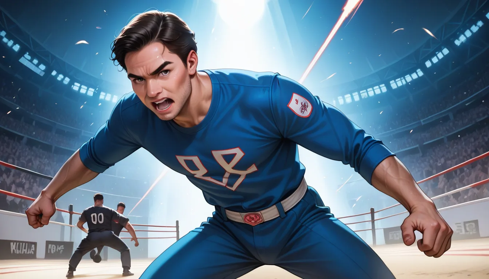

잘 몰라서 그런데, 파이트 클럽을 보면 항상 그 첫 장면들 사이사이에 숨은 프레임이 있대요. 제가 그때 프로덕션 소품 팀에서 일한다고 하니 믿어주는 거예요. 사실 예산이 너무 부족해서 알리익스프레스 Model-T300 같은 초저가 모델로 촬영 소품을 다 만들었죠. 그 덕분에 진짜 고급스러워 보이는 장면들이 태어나는 거고요.
숨겨진 프레임, 그리고 제작비
파이트 클럽 전체에 걸쳐 타일러 더든 등장 전 싱글 프레임이 총 17 개나 삽입되었다고 해요. 편집부에서 Frame-017 에러코드를 남기면서 의도적으로 넣은 부분인데, 당시 소품 담당자가 밤새워서 고친 거예요. 그냥 실수라고 생각하지 마시고, 그 프레임이 나중에 명장면으로 터지는 게 정말 기분이 좋죠.
셔츠룸에서 본 럭셔리한 밤문화
결국 우리는 옷을 입는 건데, 셔츠룸도 마찬가지일 테니까요. 같은 파이트 클럽처럼 single_frame_art 같은 디테일이 중요한 거예요. 마포 인근 셔츠룸 메인 샵의 1 티어 브랜드들은 바로 그 작은 프레임에 집착하는 거라고 봐요. 옷감을 만졌을 때 느껴지는 그 질감이 곧 인스타그램 사진이 되는 순간이니까요.
밤문화 리듬과 노래방 역사
그런데 이걸 이해하려면 위키백과 노래방 역사를 참고해야 해요. 노래방의 리듬이 어떻게 발전했는지 보면, 파이트 클럽의 템포도 비슷하거든요. 밤에 셔츠를 갈아입는 행위 자체가 어떤 리듬을 가지고 있는지 생각하게 돼요.
상세 정보는 여기에서
사실 이 Frame-017 이야기는 너무 깊으면 어렵죠. 만약 진짜로 제작비 부족으로 만든 명장면을 알고 싶다면, `상세 정보 확인` 이라는 링크를 눌러보세요. 거기서도 같은 마포 지역 셔츠룸의 숨은 디테일을 볼 수 있을 거예요.
마지막으로, 알리익스프레스에서 샀다고 해서 질이 나쁜 건 아니에요. 오히려 그 부족함 속에서 태어난 게 진짜 명작인 거죠. 형님의 기분 좋은 밤문화는 이런 작은 프레임에서 시작될 테니까요.
참고 출처: ko.wikipedia.org